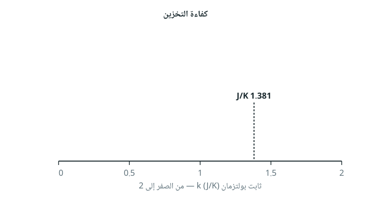

كفاءة التخزين
Round-trip storage efficiency
كفاءة التخزين هي نسبة الطاقة المستخرجة من نظام تخزين إلى الطاقة التي أُدخلت إليه في دورة كاملة، وتُعبَّر عنها بنسبة مئوية. تقيس ما يبقى بعد فقد الشحن والتفريغ والوقوف.
كفاءة التخزين، وتُسمّى كفاءة الدورة الكاملة، هي نسبة الطاقة الكهربائية المستخرجة من نظام تخزين إلى الطاقة الكهربائية التي أُدخلت إليه خلال دورة شحن وتفريغ كاملة. وهي نسبة بلا وحدة تُعبَّر عنها بنسبة مئوية، وتقلّ عن 100% دائماً لأن كل تحويل يبدّد جزءاً. والفقد يأتي من ثلاثة مصادر: فقد الشحن في المحوّلات والكيمياء، وفقد التفريغ، وفقد الوقوف الذي يستهلكه النظام بلا إنتاج. وتختلف الكفاءة اختلافاً كبيراً بحسب التقنية: البطاريات الليثيوم تبلغ 85–95%، والتخزين بالضخ المائي 70–80%، والهيدروجين 30–40% لأن سلسلة التحويل أطول. وهي عامل حاسم في حساب جدوى التخزين: نظام بكفاءة 40% يحتاج ضعف الطاقة تقريباً لما يُخرجه. مثال: نظام بطاريات أُدخل إليه 100 kWh واستُخرج منه 90 kWh تكون كفاءته 90%.
كيف تعمل الظاهرة؟
كفاءة التخزين تنشأ من أن كل تحويل للطاقة يبدّد جزءاً منها حرارةً، بحسب القانون الثاني للديناميكا الحرارية. في البطارية، يُفقد جزء في مقاومة داخلية أثناء الشحن وجزء أثناء التفريغ، ويُفقد جزء في محوّل التيار المتردد إلى مستمر والعكس. وفي التخزين بالضخ، يُفقد جزء في المضخة وجزء في التوربين وجزء في الاحتكاك داخل الأنابيب. وفي الهيدروجين، تُضاف حلقات تحويل إضافية: التحليل الكهربائي ثم الضغط أو التسييل ثم إعادة التحويل، فتُضرب الكفاءات وتنخفض النتيجة بشدة. ولأن الفقد يتراكم ضرباً لا جمعاً، فإن تحسين حلقة واحدة بنسبة صغيرة يرفع الكفاءة الكاملة بنسبة أقل، وهذا يفسّر لماذا تبقى كفاءة الهيدروجين منخفضة رغم تحسين كل حلقة على حدة.
العلاقة بالأرقام
η_rt = E_out/E_in = η_charge × η_discharge × η_standby. والطاقة اللازمة لإخراج E_out هي E_in = E_out/η_rt. والفقد = E_in − E_out. مثال عددي: η_charge = 0.95، η_discharge = 0.95، η_standby = 1.00: η_rt = 0.9025 = 90.3%. ولإخراج 100 kWh يلزم 110.8 kWh. ولو أُضيف فقد وقوف 2% شهرياً على مدى شهر لصار η_rt = 0.9025 × 0.98 = 0.884 = 88.4%.
مفاهيم متقاربة
كفاءة التخزين ليست كفاءة الشحن ولا كفاءة التفريغ، بل حاصل ضربهما مع فقد الوقوف. وليست السعة ولا القدرة. وليست العمر ولا معدل التدهور. والخطأ الشائع أن تُجمع الكفاءات: 95% + 95% لا معنى لها، والصحيح 0.95 × 0.95. وأخيراً كفاءة التخزين ليست كفاءة النظام كله، فالنظام يشمل الشبكة والمحوّلات والأحمال، وكفاءته الكلية أقل من كفاءة التخزين وحدها.
حدود التطبيق
كفاءة التخزين تعتمد على نمط التشغيل: دورة كاملة سريعة تعطي رقماً، ودورة جزئية متكررة تعطي رقماً آخر، فلا تُقارن الأرقام بلا تعريف نمط القياس. وفي الأنظمة التي تُستعمل فيها الحرارة المتولّدة، كالتخزين الحراري المشترك، لا تُحسب كفاءة كهربائية واحدة بل لكل مخرج. وفي التخزين طويل الأمد، يصير فقد الوقوف أهم من كفاءة الشحن، فالكفاءة الكاملة تنخفض بشدة مع المدة. ولا تُستعمل كفاءة التخزين للتنبؤ بالجدوى الاقتصادية وحدها، فالسعر الزمني للكهرباء قد يبرّر كفاءة منخفضة.

| الكمية | القيمة | المصدر |
|---|---|---|
| الكفاءة الكاملة في المثال | 90.3 % | [1] |
المصادر
- 1 The International System of Units (SI), 9th edition (2019) — BIPM — Bureau International des Poids et Mesures (2019). www.bipm.org/en/publications/si-brochure · اطُّلع عليه 2026-11-21
- 2 CODATA Value: Boltzmann constant — NIST — CODATA 2022 recommended values (2024). physics.nist.gov/cgi-bin/cuu/Value?k · اطُّلع عليه 2026-11-21
- 3 CODATA Value: molar gas constant — NIST — CODATA 2022 recommended values (2024). physics.nist.gov/cgi-bin/cuu/Value?r · اطُّلع عليه 2026-11-21
استشهد بهذا المصطلح
الصيغتان مبنيتان من بيانات الصفحة نفسها: العنوان والتاريخ ورابط النسخة المنشورة.
كفاءة التخزين — Round-trip storage efficiency. (2026). ديوان المعرفة — انفراد. https://infiradev.com/diwan/terms/term-storage-efficiency.html
@misc{term-storage-efficiency2026,
title = {كفاءة التخزين},
titleaddon = {Round-trip storage efficiency},
howpublished = {{ديوان المعرفة — انفراد} — مرجع علمي عربي},
year = {2026},
url = {https://infiradev.com/diwan/terms/term-storage-efficiency.html},
urldate = {2026-11-26},
note = {مراجعة علمية: hermes (مراجعة معتمدة 2026-11-26)}
}
راجعه: hermes (مراجعة معتمدة 2026-11-26) · 2026-11-26 · آخر تحديث 2026-11-21